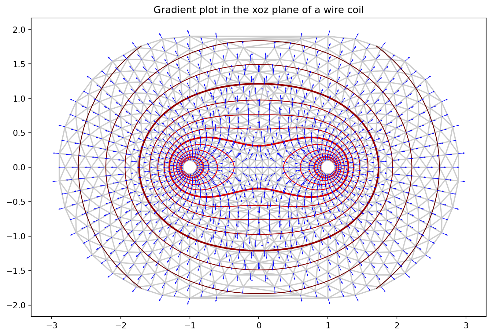

Code
from matplotlib.tri import (Triangulation, UniformTriRefiner, CubicTriInterpolator)
import matplotlib.pyplot as plt
import numpy as np
from numpy import vectorize,pi
from scipy.integrate import quad
a=1. #圆环半径
q=1. #带电量
eps=1e-5 #防止奇点附近值过大
d_phi=lambda theta,x,y,z : q/np.sqrt((x-a*np.cos(theta))**2+(y-a*np.sin(theta))**2+z**2+eps)
#利用vectorize装饰器一次传入一组x,y,z值作为参数进行积分
@vectorize
def Quad(f_handle,x,y,z):
return quad(f_handle,0,2*pi,args=(x,y,z))[0]
n_angles = 30 #角度划分数目
n_radii = 20 #极径划分数目
min_radius = 0.1*a #最小极径
radii = np.linspace(min_radius, 1.9*a, n_radii)
angles = np.linspace(0, 2 * np.pi, n_angles, endpoint=False)
angles = np.repeat(angles[..., np.newaxis], n_radii, axis=1) #...和newaxis都是索引的高级写法，具体作用参见https://numpy.org/doc/stable/reference/arrays.indexing.html
angles[:, 1::2] += np.pi / n_angles #每隔一圈点将数据点旋转过一个最小角度，使得点之间错开从而更好看（amazing）
#x,y坐标以及对应的电势
x = np.concatenate(((radii*np.cos(angles)).flatten()+a,(radii*np.cos(angles)).flatten()-a),axis=0)
y = np.concatenate(((radii*np.sin(angles)).flatten(),(radii*np.sin(angles)).flatten()),axis=0)
V = Quad(d_phi,x,0,y) #这里实际上是把y坐标取为0，y作为z轴坐标传入的
triang = Triangulation(x, y) #对x,y代表的点进行三角剖分，默认进行Delaunay三角剖分
triang.set_mask( #掩蔽奇点，这里是圆环xoz截面处所在的两个点附近的点
np.logical_or(
np.hypot(x[triang.triangles].mean(axis=1)+a,y[triang.triangles].mean(axis=1))< 0.1*a,
np.hypot(x[triang.triangles].mean(axis=1)-a,y[triang.triangles].mean(axis=1))< 0.1*a,
)
)
#对三角网格进行细分、插值
refiner = UniformTriRefiner(triang) #针对前面定义的三角网格triang新建一个refiner
tri_refi, z_test_refi = refiner.refine_field(V, subdiv=3) #将每个三角形细分为4**subdiv个小三角，refine data，默认使用三次插值器
tci = CubicTriInterpolator(triang, -V) #用于对电势的负值进行插值的三次插值器
(Ex, Ey) = tci.gradient(triang.x, triang.y) #计算电势的负梯度
E_norm = np.sqrt(Ex**2 + Ey**2)
fig, ax = plt.subplots(figsize=(10,10),facecolor='w')
ax.set_aspect('equal')
ax.use_sticky_edges = False
ax.margins(0.07)
# tpc = ax.tripcolor(triang, V, shading='gouraud') #绘制Pseudocolor plots, 但是并不好看
ax.triplot(triang, color='0.8') #绘制三角网格
levels = np.arange(0., 20., 0.5) #绘制的等值线的值分布数组
ax.tricontour(tri_refi, z_test_refi, levels=levels, cmap='hot',
linewidths=[2.0, 1.0, 1.0, 1.0]) #使用前面refine过后的数据绘制等值线图
ax.quiver(triang.x, triang.y, Ex/E_norm, Ey/E_norm,
units='xy', scale=10., zorder=3, color='blue',
width=0.007, headwidth=3., headlength=4.) #绘制电场强度矢量，这里进行了normalize，所有箭头长度相同
ax.set_title('Gradient plot in the xoz plane of a wire coil')
fig.savefig('xoz.png',dpi=120)
plt.show()
